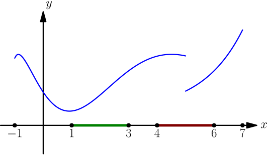
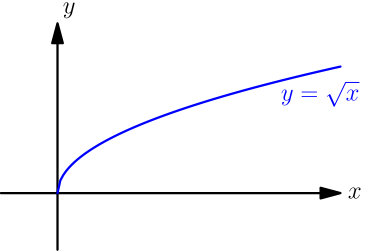
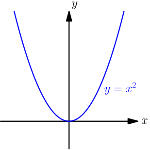
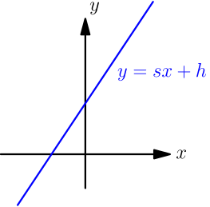
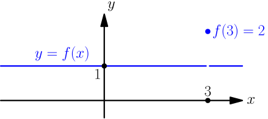
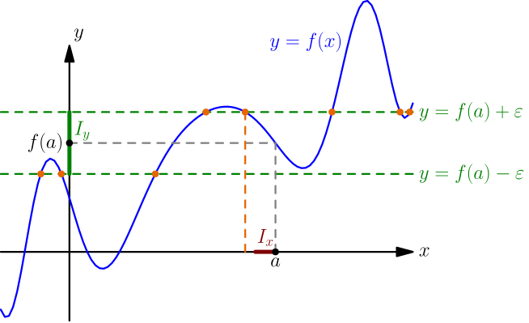
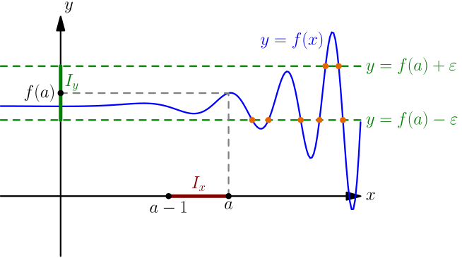
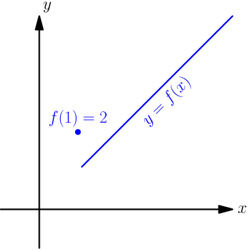

Definitions of Continuity¶
We start with an intuitive definition of continuity using graphs, and then we figure out how to express it without using graphs at all.
The purpose of this page is to explain the connection between graphs and how continuity is usually defined. If you dislike relying only on graphs to prove things, don't think of the content of this page as proofs; instead, think of it as intuitive explanations that aren't supposed to be perfectly rigorous.
"Definition" with Graphs¶
We say that a function $f$ is continuous on an interval, if the part of the graph $y=f(x)$ directly above or below the interval (imagine the interval on the $x$ axis) consists of only one part. For example, the function represented by the below graph is continuous on $[1,3]$, but discontinuous on $[4,6]$.

If a function is defined on some interval, we can say that the function is continuous, without specifying any interval. Here the interval defaults to the interval that the function is defined on. For example:
- Let's say that the function in the above drawing is defined on the interval $[-1, 7]$. It's a discontinuous function, which means that it's discontinuous on the interval $[-1,7]$.
-
The function $f(x) = \sqrt{x}$ is defined for $x \in [0,\infty)$.
It is continuous, which means that it's continuous on $[0,\infty)$;
the graph is the upper half of a sideways parabola
($y=\sqrt{x}$ gives $x=y^2$, but $y$ can't be negative),
and it consists of only one part.

-
The function $g(x) = x^2$ is defined for all $x \in \mathbb{R}$.
It is continuous, which means that it's continuous on the open interval $(-\infty, \infty) = \mathbb{R}$.
The graph is a parabola, and again, parabolas consist of only one part.

-
If $s$ and $h$ are any numbers, then the function $H(x) = sx+h$ is defined for all $x \in \mathbb{R}$.
It's continuous, because the graph is a line
consisting of only one part.

Looking for an Alternative Definition¶
The above definition of continuity is useful for quickly figuring out whether any given function is continuous; just draw a graph with your favorite function graphing software and look. However, it's hard to answer the following questions with it:
- If $f(x)$ and $g(x)$ are continuous, then can we know for sure that $f(x)+g(x)$ is continuous? What if we subtract, multiply or divide instead of adding?
- Can we use continuity somehow when calculating limits?
- What should you do if looking at graphs isn't convincing enough for you?
We want to find an alternative definition for continuity to work around these problems. Let's start with examples of discontinuous functions, such as the "jumping function" $$ J(x) = \begin{cases} -1, & \text{if $x < 3$}; \\ +1, & \text{if $x \ge 3$}. \end{cases} $$

In the past, we have seen that $\lim_{x \to 3} J(x)$ doesn't exist; it's possible to show it with one-sided limits or directly from the definition of limit. This gives a hint that for a function to be continuous on an interval, maybe any limit of the function with $x$ approaching some number on the interval should exist.
This is not enough to guarantee that the function is continuous. For example, consider the discontinuous function $$ f(x) = \begin{cases} 1, & \text{if $x \ne 3$}; \\ 2, & \text{if $x = 3$}. \end{cases} $$

This function satisfies $$ \lim_{x \to 3} f(x) = \lim_{x \to 3} 1 = 1, $$ where we used the fact that the definition of $\lim_{x \to 3} f(x)$ doesn't use $f(3)$ for anything.
At any number $a \ne 3$, we have $\lim_{x \to a} f(x) = 1$, because we can choose an input interval centered around $a$ but not containing the number $3$; in that interval with $a$ excluded, the only value of the function is $1$, which is in any output interval centered around $1$. Letting $D$ denote the distance between $a$ and $3$ (that's positive because $a\ne 3$), one suitable input interval is $(a-\frac D 2, a+\frac D 2)$.
So, even though the limit of the function exists at every number, the function is discontinuous. In this example, we have $$ \lim_{x \to 3} f(x) \ne f(3). $$ If we also require that this doesn't happen, then there's no way how the graph of the function could consist of more than one part; requiring the limit to exist means that two parts of the graph can't have a vertical gap between them, and also requiring the limit to equal the value of the function ensures that no value of the function can be away from the rest of the graph.
If a function $f$ is defined for all numbers and $\lim_{x \to a} f(x) = f(a)$ for all numbers $a$, then the graph $y=f(x)$ consists of only one part.
Other Direction¶
Let $f$ be a function defined for all numbers. Now we know that if $\lim_{x \to a} f(x) = f(a)$ for all numbers $a$, then the graph of $f$ must consist of only one part. Let's see whether this also goes the other way: if the graph consists of only one part, then do we have $\lim_{x \to a} f(x) = f(a)$?
Suppose that the graph of $f$ consists of only one part. Let $a$ be any number, and let $I_y=(f(a)-\epsi, f(a)+\epsi)$ be any open interval centered around $f(a)$. Consider the lines $y=f(a) \pm \epsi$ surrounding $I_y$.
If the graph intersects the lines $y = f(a) \pm \epsi$ on the left side of $a$, like in the below picture, then we choose an input interval $I_x$ on the left side of $a$ so that there are no intersection points directly above or below the interval. The graph consists of just one part, so on the input interval, it must be between the two lines and we get $$ f(\text{any number in $I_x$}) \in I_y. $$

If the graph doesn't intersect the lines $y = f(a) \pm \epsi$ on the left side of $a$, then the graph must be between $y = f(a) \pm \epsi$ on the left side of $a$; otherwise there would be an intersection point somewhere, or the graph would not consist of only one part. In this case, we choose $I_x = (a-1, a)$, and again, we get $$ f(\text{any number in $I_x$}) \in I_y. $$

This shows that $\lim_{x \to a^-} f(x) = f(a)$, and with a very similar derivation, we get $\lim_{x \to a^+} f(x) = f(a)$. By using this result, we get $\lim_{x \to a} f(x) = f(a)$.
If a function $f$ is defined for all numbers and the graph $y=f(x)$ consists of only one part, then $\lim_{x \to a} f(x) = f(a)$ for all numbers $a$.
This result gives a very quick way to calculate a limit: draw the graph of the function, and if the function turns out to be continuous, plug the number into the function and you're done.
With this and the previous result in mind, we get that the graph of $f$ consists of only one part if and only if $\lim_{x \to a} f(x) = f(a)$ for all $a$.
To talk about whether this happens with a given $a$, we introduce another concept: a function $f$ is continuous at $a$ if $\lim_{x \to a} f(x) = f(a)$. Now $f$ is continuous if and only if it's continuous at all numbers.
Generalizing¶
Above we talked about continuity on the interval $\mathbb{R} = (-\infty, \infty)$. Let's see whether this works on other intervals too. For example, let's define a function $f$ on the interval $[1, \infty)$ by $$ f(x) = \begin{cases} 2, & \text{if $x=1$} \\ x, & \text{if $x > 1$}. \end{cases} $$

This function is not continuous, and with a right limit, we get $$ \lim_{x \to 1^+} f(x) = \lim_{x \to 1^+} x = 1 \ne f(1). $$ However, we can't take a both-sided limit with $x \to 1$, because the function is not defined for inputs less than $1$.
The end points of an interval are the $a$ and $b$ of $(a,b)$, $(a,b]$, $[a,b)$ or $[a,b]$; they may be infinite, but infinities are not included in the interval, so we can have $[a,b)$ with $b=\infty$ but not $(a,b]$ with $b=\infty$. The following result can be justified very similarly to what we did above.
Let $I$ be any interval with end points $a$ and $b$. The graph of a function $f$ on $I$ consists of only one part if and only if all of the following conditions are true:
- For all numbers $c \in I$ except the end points of $I$, we have $\lim_{x \to c} f(x) = f(c)$.
- If $a \in I$, then $\lim_{x \to a^+} f(x) = f(a)$.
- If $b \in I$, then $\lim_{x \to b^-} f(x) = f(b)$.
Choosing $I = \mathbb{R} = (-\infty, \infty)$ gives the result that we had above, with all numbers included in $I$ and both end points excluded (here we don't think of infinities as numbers). From now on, we use these conditions as the definition of continuity, but of course, we can still look at graphs to quickly check whether a function is continuous or not.